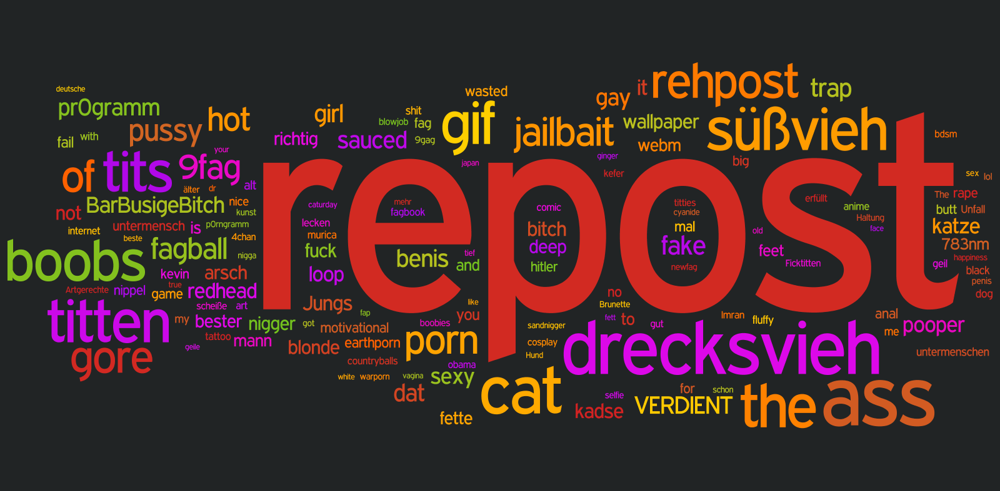

Tagcloud (Juni 2014)

Hinweise
- Angezeigt werden die 150 meist genutzten Tags abzüglich
nsfw, nsfl und sfw
- Die Größe eines Eintrags repräsentiert seine Verwendungshäufigkeit
Methodik
Kritik
- Tags mit Leerzeichen werden getrennt dargestellt (so wird z.B.
Falk der Hurensohn als 3 Tags - Falk, der und Hurensohn - angezeigt)